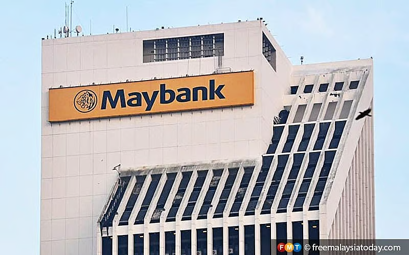

Documented Cybercrime Incidents and Investigations
A data breach at a major company occurs when unauthorized persons gain access to sensitive information such as customer data, financial records or intellectual property often due to cyberattacks and system vulnerabilities. These incidents can affect millions of users leading to identity theft, financial losses and erosion of customer trust.
For the company, the consequences typically include legal penalties, regulatory scrutiny, reputational damage and significant costs related to investigation, remediation and improved security measures. Here are example articles related to data breach incidents:
KUALA LUMPUR: A cyberattack on Kuala Lumpur International Airport (KLIA) over the disrupted airport systems for several hours, knocking out flight information displays, check-in counters and baggage handling and forcing a switch to manual operations with intermittent display outages reported for up to two days and recovery slowed by the lack of a robust backup system. While Malaysia Airports Holdings Bhd (MAHB) denied operational disruptions and said systems were restored within four hours, Prime Minister Datuk Seri Anwar Ibrahim later confirmed the attack revealing that hackers had demanded a US$10 million ransom which was rejected as authorities continue investigating the nature and perpetrators of the intrusion.

PETALING JAYA: Malayan Banking Bhd (Maybank) said it is taking allegations of a customer data leak seriously and is investigating claims. The response follows a claim by a Facebook user that personal data of nearly 13 million Malaysians from Maybank, Astro and the Election Commission had been leaked online, allegedly involving sensitive details such as names, identity card numbers, addresses and dates of birth. Communications and digital minister Fahmi Fadzil described the alleged leak as serious and urged CyberSecurity Malaysia and the Personal Data Protection Department to investigate and take appropriate action.
PETALING JAYA: A user on a notorious breach-forum has claimed to have stolen Telekom Malaysia's complete customer database alleging it contains nearly 200 million entries and about 20 million valid user records along with internal database architecture documents and samples of sensitive personal data such as MyKad numbers, addresses and religious beliefs. The user is reportedly offering to sell the data to Telekom Malaysia first. The company's history of previous data breaches affecting both customers in 2022 and 2023.
Organizations must maintain secure, redundant backup systems that can be rapidly deployed during incidents to minimize downtime and operational disruption.
Implement strict data minimization practices and access controls to limit the scope and impact of potential data breaches involving customer information.
Develop and regularly test comprehensive incident response plans including communication protocols, forensic investigation procedures, and regulatory notification timelines.
Deploy advanced threat detection systems and 24/7 security monitoring to identify and respond to intrusion attempts before attackers can compromise critical systems.